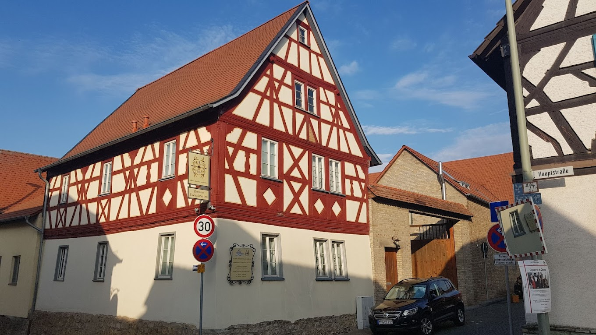
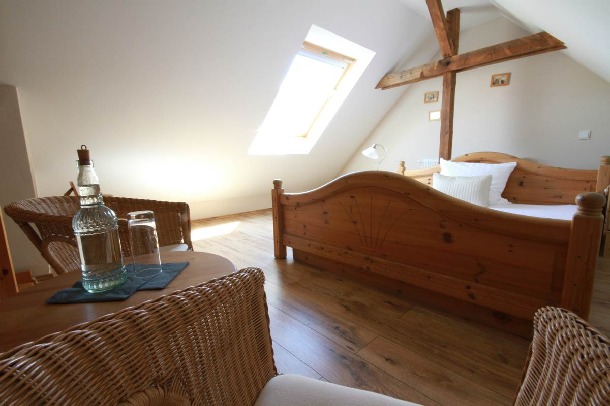
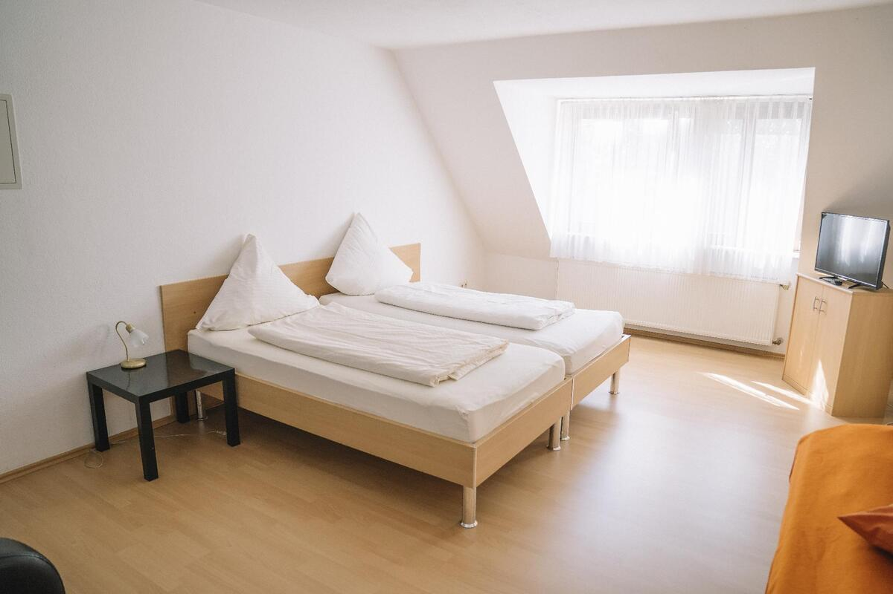

Location
Unsere Traumhochzeit findet in der wunderschönen Kleine Residenz am Schloss statt.
Sowohl die Trauung als auch die anschließende Feier finden an diesem Ort statt. Nach der Zeremonie stoßen wir beim Sektempfang gemeinsam an. Danach gibt es Zeit für Kaffee und Kuchen, bevor wir am Abend gemeinsam essen und später feiern.
Wir freuen uns sehr darauf, diesen besonderen Tag mit euch zu verbringen!



Tagesablauf
Ankunft der Gäste
Kommt in aller Ruhe an und sucht euch einen schönen Platz für die Trauung.
Trauung
Der große Moment! Wir sagen "Ja".
Sektempfang
Wir stoßen gemeinsam auf die Liebe an und machen erste Fotos.
Kaffee & Kuchen
Zeit für süße Leckereien, die Hochzeitstorte und entspannte Gespräche.
Abendessen
Lasst es euch schmecken beim gemeinsamen Dinner.
Party
Ab auf die Tanzfläche – Open End!
Kleine Änderungen sind natürlich noch möglich, aber so habt ihr schon mal eine gute Orientierung für unseren Tag.
Unterkunft

Übernachten in der Location
Unsere Location, die Kleine Residenz am Schloss, verfügt über einige wunderschöne Zimmer. Diese könnt ihr ab sofort direkt bei der Location für unsere Hochzeitsnacht reservieren:
- Einzelzimmer: 82 € pro Nacht
- Doppelzimmer (Einzelbelegung): 97 € pro Nacht
- Doppelzimmer (Doppelbelegung): 129 € pro Nacht
*Preise inkl. 2 € Tourismusbeitrag pro Person/Tag.
So bucht ihr: Schreibt einfach eine E-Mail an info@residenz-am-schloss.de mit dem Betreff: "Hochzeit Nadja und Yarden" und gebt euren gewünschten Zimmertyp an.

Alternative: Genau gegenüber
Falls ihr schon am Tag vorher anreisen möchtet oder die Zimmer in der Location bereits vergeben sind, gibt es direkt auf der anderen Straßenseite ein gemütliches Gästehaus. Hier könnt ihr euch jederzeit selbst einbuchen:
Gutsausschank Kahl (Gästehaus & Pension)
Thomas & Alexandra Kahl GbR
Hauptstraße 4
65239 Hochheim am Main
Zur Website
Natürlich gibt es auch noch viele weitere Hotels und Ferienwohnungen in Hochheim und der direkten Umgebung (z.B. Richtung Frankfurt oder Wiesbaden). Schaut dazu einfach auf den bekannten Buchungsportalen vorbei. Falls ihr Fragen zur Lage habt, helfen wir euch gerne weiter!
Fragen und Antworten
RSVP & Organisation
Wie können wir zu- oder absagen?
Mit eurer Einladung habt ihr einen kleinen Einleger mit einem QR-Code und einem Link erhalten. Darüber könnt ihr euch ganz bequem online zurückmelden.
Solltet ihr den Zettel verlegt oder verloren haben, ist das gar kein Problem – meldet euch einfach direkt bei uns!
Bis wann sollen wir uns zurückmelden?
Bitte gebt uns bis zum [Datum einfügen] über den Link aus der Einladung Bescheid, ob ihr kommen könnt.
Gäste, von denen wir bis zu diesem Datum nichts gehört haben, müssen wir für die weitere Planung leider als "nimmt nicht teil" markieren. Wir fänden es unglaublich schade, wenn ihr nicht dabei seid – also gebt uns am besten direkt Bescheid! :)
Darf ich eine Begleitung (+1) mitbringen?
Unsere Location hat eine begrenzte Kapazität, weshalb wir im kleinen und engen Kreis feiern. Bitte bringt daher nur Begleitpersonen mit, die namentlich auf eurer Einladung stehen oder ausdrücklich von uns eingeplant wurden. Vielen Dank für euer Verständnis!
Sind Hunde auf der Feier erlaubt?
Wir lieben Tiere, aber an unserem Hochzeitstag müssen eure Vierbeiner leider zu Hause bleiben. Es wird laut, trubelig und voll – das wäre für die Fellnasen ohnehin kein großer Spaß. Danke für euer Verständnis!
Gibt es Parkmöglichkeiten?
Direkt an der Location gibt es leider nur sehr eingeschränkte Parkmöglichkeiten in den umliegenden Seitenstraßen (bitte unbedingt auf Parkverbote achten!).
Der sicherste und entspannteste Parkplatz ist nur ein paar Minuten die Straße runter: der Parkplatz der Sporthalle Massenheim. Von dort aus sind es gemütliche 5–10 Minuten zu Fuß bis zu uns.
Parkplatz in Google Maps öffnenDresscode & Geschenke
Gibt es einen Dresscode?
Kommt gerne festlich und elegant – aber vor allem so, dass ihr euch wohlfühlt! Da es im Juni sehr warm werden kann, wählt gerne luftige Stoffe. Weiß ist natürlich der Braut vorbehalten, ansonsten freuen wir uns über farbenfrohe Outfits.
Für die Damen passen Kleider, Röcke oder ein schickes Oberteil mit Hose. Für die Herren: Krawatte oder Fliege mit Sakko sind super – das Sakko darf aber natürlich ausgezogen werden, sobald der Bräutigam das auch tut. ;)
Kleine Info am Rande: Unsere Trauzeuginnen werden voraussichtlich Teal und Orange tragen. Falls ihr nicht im "Partnerlook" mit ihnen erscheinen wollt, könnt ihr diese Farbe gerne meiden (es ist aber absolut kein Drama, wenn doch!).
Was wünscht ihr euch als Geschenk?
Das größte Geschenk für uns ist, diesen Tag gemeinsam mit euch zu feiern! Da unser Haushalt bereits komplett ausgestattet ist, benötigen wir keine Sachgeschenke.
Wenn ihr uns dennoch eine kleine Freude machen möchtet, freuen wir uns riesig über einen finanziellen Beitrag für unsere gemeinsame Zukunft und die Flitterwochen.
Wo können wir unsere Geschenke abgeben?
In der Location wird es einen zentralen Geschenketisch geben. Dort steht auch eine sichere Box bereit, in die ihr eure Briefe und Umschläge mit Kartengeschenken einwerfen könnt.
Trauung & Ablauf
In welcher Sprache findet die Trauung statt?
Da unsere Gäste aus verschiedenen Ländern anreisen, wird die Trauung eine bunte Mischung aus Deutsch und Englisch sein. So können hoffentlich alle der Zeremonie gut folgen!
Dürfen wir während der Trauung Fotos machen?
Wir möchten euch bitten, eure Handys und Kameras während der Zeremonie in der Tasche zu lassen. Wir wünschen uns, dass ihr den Moment ganz unbeschwert mit uns genießt – und wir möchten auf den professionellen Fotos lieber in eure strahlenden Gesichter statt auf eine Wand aus Smartphones blicken.
Vor und nach der Trauung sowie auf der anschließenden Feier dürft ihr natürlich fleißig knipsen, filmen und Selfies machen!
Und keine Sorge: Wir stellen euch im Nachhinein natürlich alle professionellen Bilder unserer Fotografin / unseres Fotografen zur Verfügung!
Gibt es eine feste Sitzordnung?
Ja, für das Abendessen gibt es einen festen Sitzplan, damit jeder einen schönen Platz findet. Sobald der offizielle Teil vorbei ist und die Party startet, hebt sich die Sitzordnung natürlich auf und ihr könnt euch ganz ungezwungen untereinander mischen!
Was erwartet uns abseits des Essens?
Langweilig wird es garantiert nicht! Neben der Trauung und dem großen Festmahl erwartet euch eine Fotobox für lustige Erinnerungen, eine Auswahl an Kartenspielen für Zwischendurch, jede Menge Platz auf der Tanzfläche und natürlich Zeit für tiefe Gespräche mit euren Sitznachbarn.
Wie lange wird gefeiert?
Wir dürfen die Location theoretisch bis 3:00 Uhr morgens nutzen. Angepeilt ist ein schönes, fulminantes Finale gegen 2:00 Uhr.
Wir freuen uns natürlich riesig über jeden, der bis zum bitteren (oder eher glücklichen) Ende mit uns durchtanzt! Wir haben aber auch vollstes Verständnis, wenn ihr aus verschiedenen Gründen früher losmüsst. Es wäre allerdings wahnsinnig schön für uns, wenn ihr zumindest bis zum Ende des "offiziellen Teils" (nach dem Abendessen und unserem ersten Tanz als Brautpaar) bei uns bleibt.
Essen, Trinken & Party
Müssen wir die Getränke selbst bezahlen?
Natürlich nicht! Für euer leibliches Wohl ist bestens gesorgt. Es wird eine feine Auswahl an Bier, Wein, Softdrinks, Wasser sowie Kaffeespezialitäten und Tee geben. Später am Abend mixen wir euch auch gerne ein paar Longdrinks. Auf sehr harte Spirituosen verzichten wir bewusst.
Was ist mit Allergien, Essens- und Musikwünschen?
Keine Sorge, verhungern oder stillsitzen muss niemand! Spezielle Ernährungsformen, Lebensmittelunverträglichkeiten und eure absoluten Lieblingslieder für die Tanzfläche fragen wir ganz bequem direkt über den RSVP-Link ab.
Gibt es einen DJ für spontane Musikwünsche?
Einen klassischen DJ vor Ort haben wir nicht. Damit trotzdem genau eure Musik läuft, tragt eure Wünsche bitte vorab im RSVP-Link ein. Solltet ihr am Abend selbst eine zündende Idee haben, sprecht einfach uns oder unsere Trauzeugen an.
Zum Schluss...
Werden Fred und George auch da sein? 🐾
Leider nein! 🐱🐱 Unsere beiden Kater müssen die Stellung zu Hause halten. Sie haben striktes Partyverbot bekommen, werden aber im Geiste (und wahrscheinlich auf dem einen oder anderen Foto) sicher dabei sein.
Ich habe eine Frage, die hier nicht beantwortet wurde?
Gar kein Problem! Wenn euch noch etwas unter den Nägeln brennt, scrollt einfach ein Stück weiter nach unten und nutzt unsere Kontaktdaten. Meldet euch jederzeit gerne bei uns!
Kontakt
Da ihr höchstwahrscheinlich ohnehin unsere Handynummern habt, schreibt uns bei allgemeinen Fragen einfach kurz per WhatsApp oder ruft durch.
Für Überraschungen, Reden & Spiele
Da wir am Hochzeitstag selbst (und davor) wahrscheinlich genug um die Ohren haben und uns außerdem wahnsinnig gerne überraschen lassen, wendet euch für geheime Pläne bitte direkt an unsere Trauzeugen:
Franzi & Van
Shahar & Borkin (Roy)
Tipp: Kontaktiert sie einfach direkt, falls ihr ihre Nummern habt. Wenn nicht, fragt uns diskret nach ihren Kontaktdaten!
Erinnerungen & Fotos
📸
Hier wird nach unserem großen Tag der Link zu unserer Online-Galerie erscheinen!
Dort könnt ihr euch dann alle professionellen Bilder in Ruhe ansehen und herunterladen. Bis dahin müsst ihr euch (und wir uns) noch ein wenig gedulden.